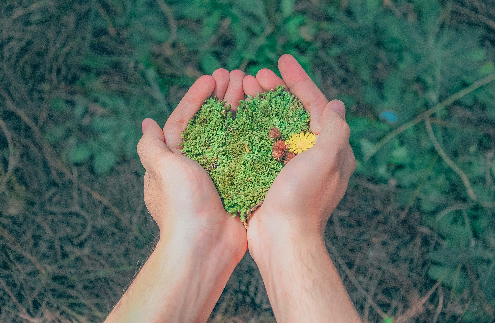

"THE SHAPE OF EARTH IS DEPENDS ON OUR HANDS, LET'S PUT OUR HANDS TOGETHER"
God created all the things that man needs, from air, water, earth, plants and animals and we humans are given the responsibility to take care of his creations but as time goes on instead of protecting and caring for the planet we humans are one of the reasons why the earth is being destroyed,we humans are not the only ones affected by environmental issues but also the plants and animals that live in this world. Does it ever cross your mind why the world is suddenly overheating, storms increase, landslides, floods, and pollution such as water, air and land are continuously increasing,this is because of human activity and also due to excessive abuse of the environment. due to the continuous change of the world is our stepping on modern technology many things have been invented but some of them have brought bad effects to our planet.
We have many things we can do to save our planet from its impending doom, we must be able to conserve our biodiversity, let's put our waste in the right place and we must be able to maintain our green world by simply following them we can restore mother earth's paradise to its former beauty.
Biodiversity is made up of different species such as animals, plants, micro organisms and we humans that exist on this planet, there are many causes of biodiversity loss such as deforestation which continues to deplete trees and causes loss of animal habitat and extinction of plant species, the loss of biodiversity can cause the cessation of nature's service to an ecosystem and society, to be able to conserve biodiversity in every consumption of trees we must let's plant something new to continue its kind, let's also avoid extreme hunting of animals and overfishing, let's be one of change, let's protect wildlife from its impending extinction and for future generations to catch up with it and not become a memory.Because of the rapid growth of population is also the increase of our basic needs as human beings, so in every consumption there is waste, to prevent uncontrollable increase of waste we need to do 3R (Reuse, Reduce and Recycle) in this way we can reduce the increase of waste in our area, we can use this waste to produce something new from the waste we have thrown away, we can use our creativity to produce something useful, this way we can avoid various pollutions such as water, air and land, we will have a clean environment, fresh air, clear ocean and healthy living with the emergence of various environmental issues due to human activity we must keep the world green, we should just plant trees to prevent various tragedies or environmental issues on our planet because if we continue consuming our resources, polluting our air, cutting down trees will cause global warming and the entry of stronger storms so as human beings and the protectors of mother earth we need to keep our world green, let's plant trees to avoid ecological issues to have a healthy environment where all species including humans can have a good life on this planet.
Let us be one in change and change begins in ourselves, we need to change our irresponsibility and be responsible for the actions we take, let’s stop the suffering of our mother earth with deforestation, pollution, extinction of all species, global warming and climate change, because we humans will continue to destroy this planet if we don't change what we are used to, let's restore the beauty of mother earth and make it a paradise and all this change depends on us hands.

Let's put our waste in to the right place